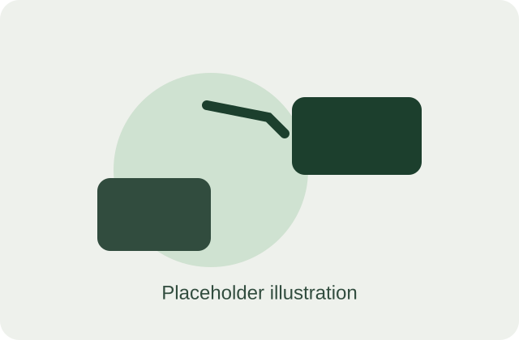
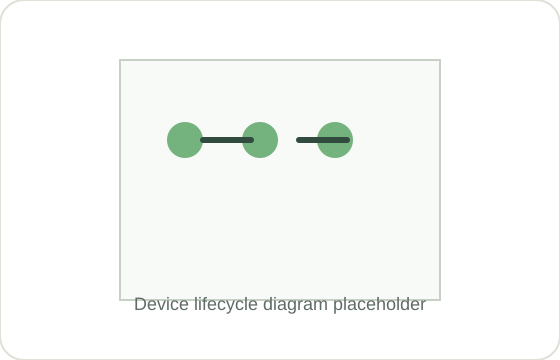

Track
A reliable record of every device: ownership, location, age, and condition.
Every device, tracked — from first use to final outcome.
C-Eco helps you find that value — and decide when to renew, repair, or resell — based on real cost, compliance, and carbon impact, not guesswork.

Problem
Renew too early, and you're writing off equipment — and money — that still had life left in it. Renew too late, and you're absorbing slower performance, higher failure rates, and compliance risk, without ever having weighed that against the environmental cost of holding on.
Most businesses don't make this call with real numbers. They make it on a supplier's renewal reminder, a rough sense that "these are getting old," or whichever quote lands first.
And it's not just the renewal decision that's unclear. Ask most businesses what happened to the last batch of laptops they retired, and the answer is usually a shrug. It might be in a drawer. It might have been binned. It might have been worth £150 — nobody checked.
Solution
C-Eco brings together the financial, compliance, and environmental sides of every device — so the decision to keep, repair, resell, or replace is based on evidence, not a guess.
A reliable record of every device: ownership, location, age, and condition.
The real numbers behind each option: remaining value, compliance status, and carbon footprint.
A clear recommendation on whether to keep, repair, resell, or recycle — and why.
Proof of what happened, kept on file: resale, recycling, and data destruction records.
How it works
Record the organisation's IT devices.
Weigh up cost, condition, and carbon impact for each one.
See a clear recommendation: keep, repair, resell, or recycle.
Connect with the right service provider when needed.
Store evidence and report lifecycle outcomes.
We're building this with real businesses. Tell us what we're missing.
Benefits
Know what devices you have, where they are, and what condition they're in.
Spot the right moment to renew — not too early, not too late — and recover value you'd otherwise lose.
Maintain clearer records relating to disposal, recycling, and data destruction.
See the environmental impact of keeping a device running versus replacing it — and weigh that alongside cost and compliance, not as an afterthought.
Audience
Whoever ends up making the call on your business's laptops and phones — IT, finance, operations, or just whoever's turn it is — C-Eco is built to make that decision easier, without adding a complex enterprise system on top of it.
About
C-Eco is an early-stage circular IT venture developing a simpler way for organisations to manage technology throughout its complete lifecycle.
The business is currently researching SME requirements, building relationships with lifecycle-service providers, and developing its initial pilot proposition.

We are speaking with UK businesses, IT professionals, finance professionals, and circular-economy service providers as we develop the first C-Eco pilot.
Contact